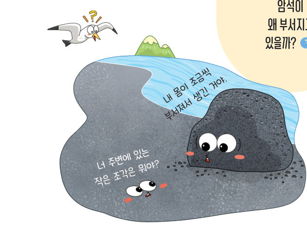
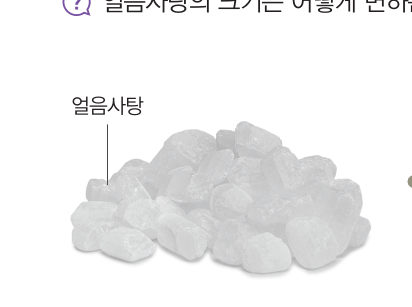
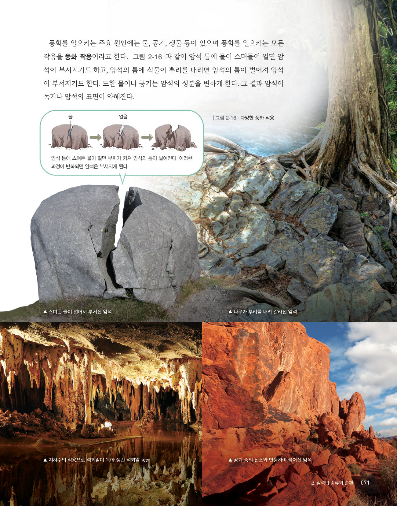
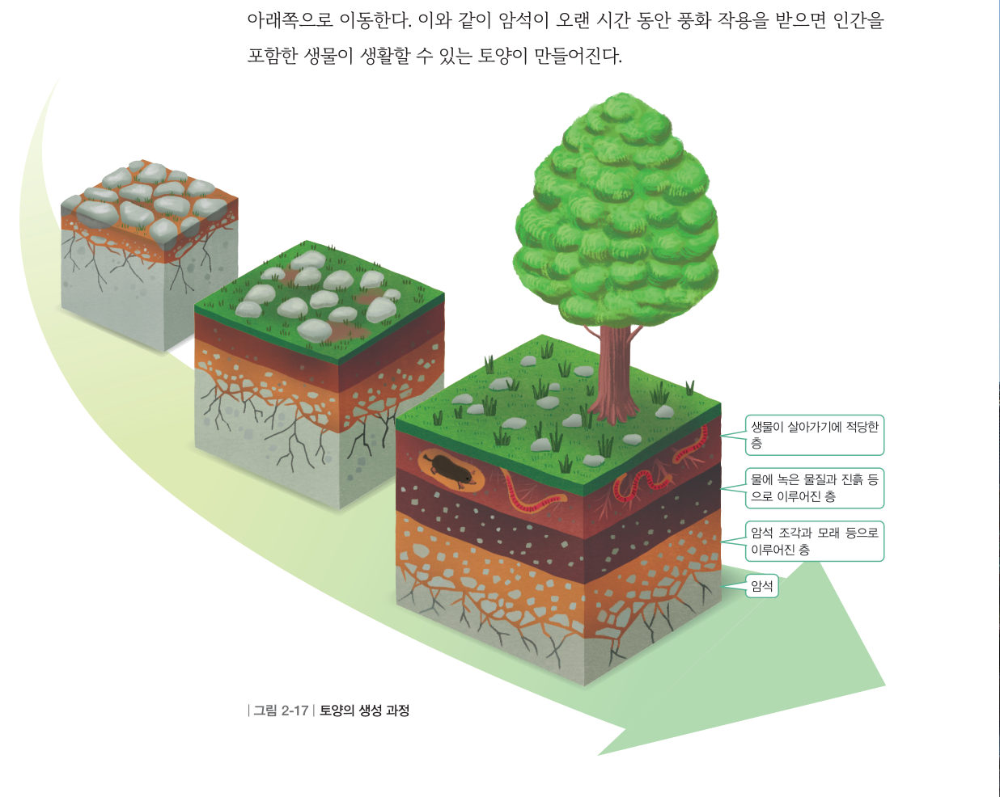
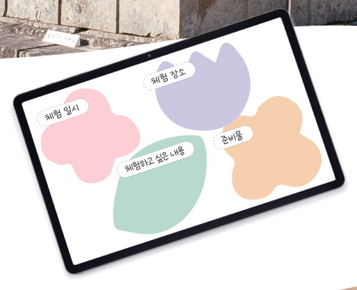

암석이 부서져 만들어진
토양
“너 주변에 있는 작은 조각은 뭐야?” “내 몸이 조금씩 부서져서 생긴 거야.” 암석이 왜 부서지고 있을까? 얼음사탕을 빻고, 암석 틈의 물을 얼렸다 녹이고, 수만 년을 빨리 감아 토양이 만들어지는 모습을 지켜보자.
현무암이 많은 지역에서 흔하게 볼 수 있는 검은색 모래는 보통은 현무암이 부서지면서 만들어진다. 지표에 있는 암석은 오랜 시간에 걸쳐 잘게 부서지고 성분이 변하는데, 이러한 현상을 풍화라고 한다.
- 얼음사탕의 크기를 관찰한다.
- 막자 사발에 얼음사탕을 넣고 막자로 빻은 뒤 얼음사탕의 크기를 관찰한다.

풍화를 일으키는 주요 원인에는 물, 공기, 생물 등이 있으며 풍화를 일으키는 모든 작용을 풍화 작용이라고 한다. 그림 2-16과 같이 암석 틈에 물이 스며들어 얼면 암석이 부서지기도 하고, 암석의 틈에 식물이 뿌리를 내리면 암석의 틈이 벌어져 암석이 부서지기도 한다. 또한 물이나 공기는 암석의 성분을 변하게 한다. 그 결과 암석이 녹거나 암석의 표면이 약해진다.

| 나무가 뿌리를 내려 갈라진 암석 | |
| 공기 중의 산소와 반응하여 붉어진 암석 | |
| 지하수의 작용으로 석회암이 녹아 생긴 동굴 |
암석이 오랜 시간 동안 풍화 작용을 받으면 잘게 부서지고 성분이 변하여 생물이 자랄 수 있는 토양이 된다. 그림 2-17과 같이 토양은 여러 층으로 이루어져 있다. 지표에 드러난 단단한 암석이 쪼개져 암석 조각이 되고, 이 암석 조각이 계속 풍화 작용을 받으면 더욱 잘게 부서진다. 이후 물이 스며들면서 물에 녹은 물질과 진흙이 아래쪽으로 이동한다.

- D
- C
- A
- B

석조 문화재는 오랜 시간 동안 비, 바람, 생물 등의 영향을 받아 색이 변하고 표면이 손상되었다. 세척할 때 표면의 파손을 최소화하기 위해 드라이아이스를 이용하고, 일부를 복원해야 할 때에는 암석의 종류를 분석해 비슷한 성분으로 복원한다. 또한 미래에 일어날 풍화 작용을 방지하기 위한 표면 보존 처리 기술을 다양하게 개발하고 있다.
| ② 풍화를 일으키는 주된 원인 중 하나는 물이다. | |
| ③ 식물의 뿌리가 암석의 틈에 파고들어도 암석을 부술 수 없다. | |
| ④ 지하수가 석회암의 일부를 녹이면 석회암 동굴이 만들어진다. | |
| ⑤ 지표의 암석이 공기 중의 산소와 반응하여 붉게 변할 수 있다. |
1암석의 종류
퇴적암: 이/가 오랜 시간 동안 다져지고 굳어져 만들어진 암석 (역암, 이암, 사암 …)
변성암: 이/가 지하 깊은 곳에서 높은 열과 압력을 받아 만들어진 새로운 암석 (편마암, 규암, 대리암 …)
3토양의 생성
⑵ 풍화 작용을 받아 생물이 자랄 수 있는 이/가 된다.
① 국가지질공원에 있는 퇴적암에서는 퇴적물이 번갈아 쌓이면서 나타난 줄무늬인 층리가 관찰되기도 한다. (63쪽) ② 퇴적암이 지하 깊은 곳에서 높은 열과 압력을 받으면 변성암이 된다. (69쪽) ③ 퇴적암이 오랜 시간에 걸쳐 물, 공기, 생물 등의 영향을 받으면 풍화되어 잘게 부서지고 성분이 변하게 된다. (72쪽)
| 나의 학습 확인하기 | 스스로 평가 |
|---|---|
| 지식·이해 암석의 종류와 생성 과정, 암석의 순환과 풍화를 설명할 수 있는가? | |
| 과정·기능 암석을 관찰·분류하고, 모형으로 암석의 순환과 풍화를 표현·유추할 수 있는가? | |
| 가치·태도 모형을 이용한 활동에 흥미를 느끼며 적극적으로 참여했는가? |